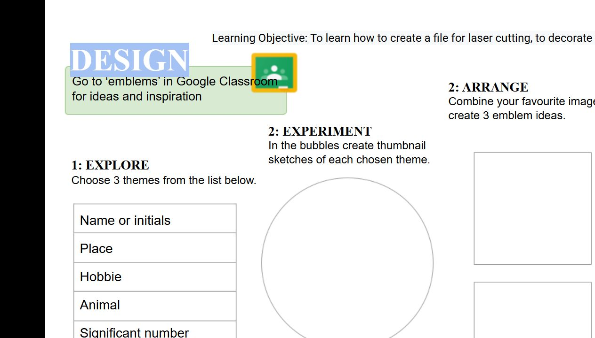

Starting point
Record what you already know and want to learn.
EVIDENCE FOLIO
Your folio records your own written evidence. It saves on this device until you print or save a PDF.

Complete the evidence prompts in the learning modules, then use this page to print a record. Your teacher will explain any submission process.
Open learning modulesFOLIO DECK
Use these cards as a simple checklist while you build your printable folio.
Record what you already know and want to learn.
Explain the safe conduct you will use.
Use a correct name and broad purpose for a tool.
Describe grain, density and knots in a sample.
Compare one manufactured wood product with evidence.
Show how you use written dimensions and related views.
Compare third-angle and isometric drawing.
Develop three distinct ideas before choosing one.
Justify your selected emblem with criteria.
Record an observation, action and next step.
Use evidence to judge how well the product does its job.
Identify an appearance strength and one improvement.